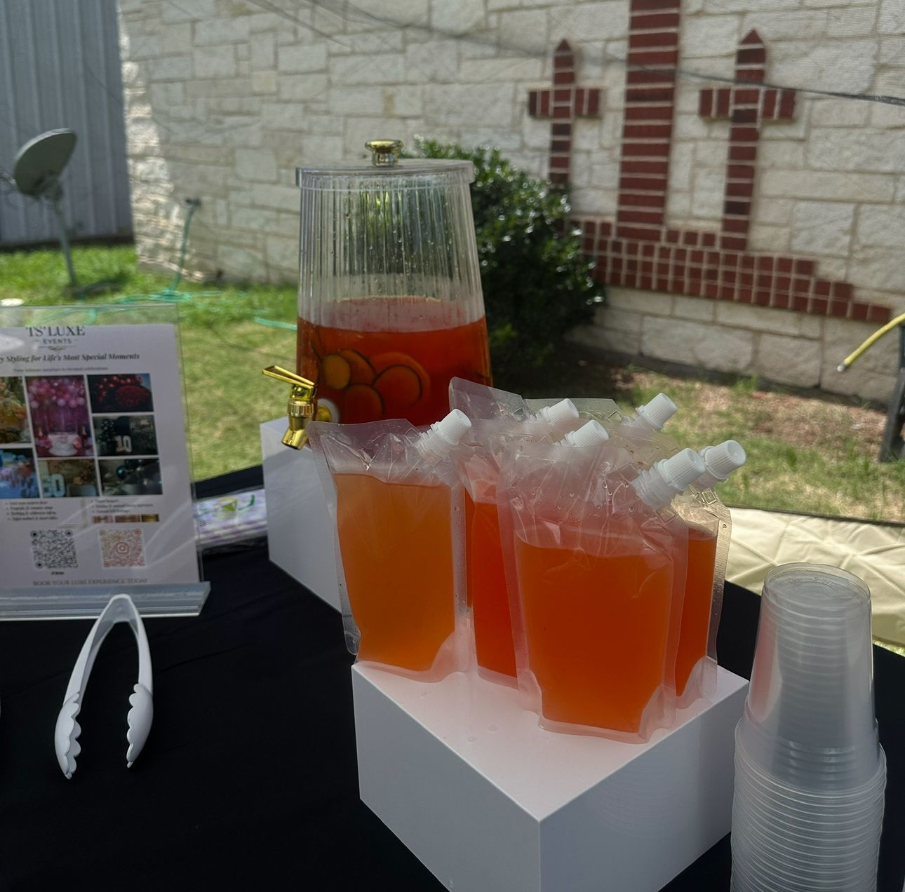
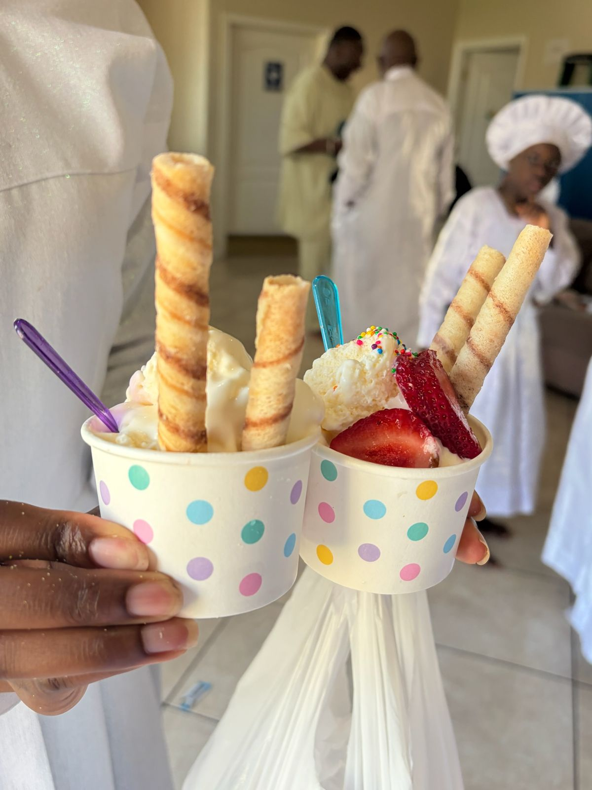
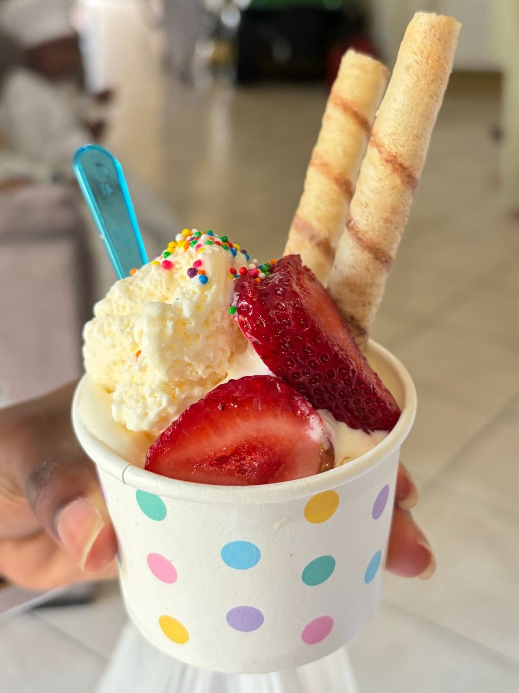

Explore looks for birthdays, graduations, showers, and intimate celebrations.
Organic Balloon InstallClean balloon styling for birthdays and intimate celebrations.Purple Shimmer BackdropA silver shimmer wall accented with organic purple balloon garlands and elegant floral details.Styled Mocktail StationA beverage feature that feels clean, pretty, and guest-ready.Dessert Table StylingLayered presentation for sweets, pastries, and table decor accents.Navy & Silver Milestone BackdropNavy and silver balloons, a shimmer wall, neon signage, and marquee numbers for a 10th birthday.Purple Draped Shimmer WallSheer purple draping over a shimmer wall, framed by lavender and violet balloon garlands.
Signature Drink DispensersTwo signature mocktails served from ribbed dispensers on white risers.

Grab-and-Go Mocktail PouchesDrink pouches ready for guests beside a fruit punch dispenser.Ice Cream Sundae BarCones, toppings, sauces, and fresh strawberries set beside a graduation cake.Sundae Toppings SpreadSprinkles, candies, sauces, and strawberries ready for guests to build their own.

Sundaes, ServedPolka-dot cups topped with wafer rolls and fresh strawberries.

Strawberry Sundae CupA finished sundae with sprinkles, strawberries, and wafer rolls.Fresh Fruit CupsIndividually served fruit cups displayed on white risers.Birthday Cake & Cookie DisplayA navy and gold birthday cake with tiered cookie stands against blue and silver balloons.